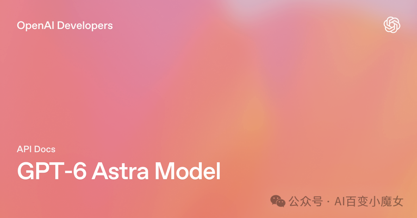
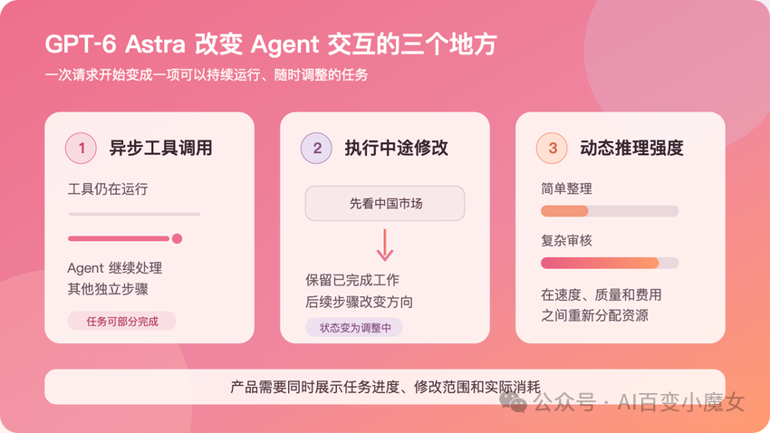

工具不用等，但应用要记更多事
“收到修改”和“修改已经生效”是两回事
Claude 和 Gemini 怎样处理执行中的修改
Responses API · WebSocket | Managed Agents 托管服务 | Live API 实时对话 | |
response.steer | user.interrupt → user.message | 语音活动检测（VAD）触发 | |
→ 完成当前输出项及已运行的托管工具 → 衔接后续响应* | → 在同一会话中 按新要求开启下一轮 | → 接收用户新输入 → 继续实时对话 | |
需观察后续响应是否应用修改 | 工具运行时，中断处理可能延迟 | 向客户端发送中断通知 | |
成果是否沿用由任务流程处理 | 开启新一轮不等于整项任务重做 | 保留在会话历史中 | |
已启动的工具 | 不能把“已发指令”当作“已停止” | 应用仍需处理外部执行状态 | |